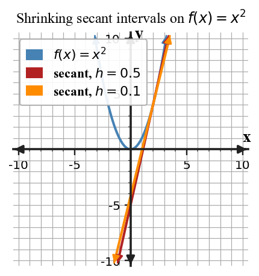

What Is a Limit?
Core idea: A limit describes nearby behavior, which can be different from the function value at the point.
You will connect graphs, tables, secant rates, and symbolic limit notation.
Learning Target
Relate average versus instantaneous change to the idea of a limit and read and interpret limit notation.
I can statements
- I can relate average versus instantaneous change to the idea of a limit and read and interpret limit notation.
- I can estimate a limit from a graph or table.
- I can connect shrinking secant intervals to instantaneous change.
Vocabulary / Key Notation Preview
- limit
- average rate of change
- instantaneous rate of change
- limit notation
Skim the terms now. Add meaning as each term is introduced in the notes.
What's To Come
This is a long-range preview for this section. Do not solve it yet. Circle anything familiar, underline symbols, labels, conditions, data, or features that seem important, and write short notes about what you think may matter later.

At $x=2$, the graph approaches one y-value but the plotted function value is different. Record the value the graph approaches and the plotted value. Which one should appear in $\lim_{x\to2} f(x)$?
Content: Read, Represent, Annotate, Apply
Directions
Read in short chunks. Annotate the prose and representations together. Mark evidence, conditions, important quantities, labels, patterns, and questions.
Reading 1: A Limit Describes Nearby Behavior
A limit answers a local question: as the input moves closer and closer to a particular value, what output is the function approaching? The function does not need to attain that output at the target input. A graph may have a hole, a different filled point, or even no defined point there while nearby outputs still approach a single number.
Limit notation separates the input being approached from the output being approached. In $\lim_{x\to a}f(x)=L$, the expression $x\to a$ describes inputs near $a$, while $L$ describes the output approached by $f(x)$. A table supports the same reasoning when values of $x$ move toward $a$ from values below and above $a$.
Stop and Discuss
- In the WTC graph, what visual feature represents nearby behavior, and what visual feature represents the assigned function value?
- Why should a table normally include inputs on both sides of the target when estimating a two-sided limit?
Input check
Confirm that the $x$-values move toward the target from both sides.
Output check
Track the number the function values approach. The value at the target input is a separate question.
Reference data for the next prompt
| $x$ | 3.9 | 3.99 | 4.01 | 4.1 |
|---|---|---|---|---|
| $f(x)$ | 7.8 | 7.98 | 8.02 | 8.2 |
Example 1: Estimate a Limit from Nearby Table Values
A table gives values of $f(x)$ near $x=4$. Estimate $\lim_{x\to4}f(x)$.
Reference data for the next prompt
| $x$ | 4.9 | 4.99 | 5.01 | 5.1 |
|---|---|---|---|---|
| $g(x)$ | 9.8 | 9.98 | 10.02 | 10.2 |
You Try It 1: Estimate a Second Table Limit
Use the table to estimate $\lim_{x\to5}g(x)$.
Reading 2: Secants Motivate Instantaneous Change
The average rate of change from $x=a$ to $x=b$ is the secant slope $$\frac{f(b)-f(a)}{b-a}.$$ It measures change across an interval, not at a single instant.
An instantaneous rate of change can be estimated by shrinking the interval. If $b$ moves closer to $a$, the secant line is built from two points that are closer together. When the corresponding secant slopes approach one number, that limiting number motivates the tangent slope at $x=a$.

Stop and Discuss
- What stays fixed and what changes when the second endpoint of a secant interval moves toward the first?
- Why is a secant slope an average rate rather than an instantaneous rate?
For a fixed input $a$ and a small nonzero change $h$, the secant slope is $$\frac{f(a+h)-f(a)}{h}.$$ The instantaneous rate is associated with what this quotient approaches as $h\to0$, not with setting $h=0$ inside the quotient.
Example 2: Compute a Secant Rate
For $f(x)=x^2$, find the average rate of change from $x=2$ to $x=2.5$. Explain why smaller right endpoints can help estimate an instantaneous rate at $x=2$.
You Try It 2: Track a Shrinking Secant Rate
For $g(x)=x^2+1$, find the average rate of change from $x=1$ to $x=1.2$ and describe what happens as the second endpoint moves toward 1.
Reading 3: Interpret the Statement Before Calculating
A statement such as $\lim_{x\to3} f(x)=7$ says that outputs are approaching 7 as inputs approach 3 from both sides. It does not, by itself, say whether $f(3)$ exists or what $f(3)$ equals. This distinction is central throughout the unit.
When reading a limit statement aloud, name the input behavior and output behavior separately: “as $x$ approaches 3, $f(x)$ approaches 7.” Avoid replacing “approaches” with “equals” unless continuity has separately been established.
Stop and Discuss
- What information about $f(a)$ is guaranteed by a statement of the form $\lim_{x\to a}f(x)=L$?
- Give one graph feature that could make $f(a)$ different from the limit while leaving the limit unchanged.
Example 3: Interpret Limit Notation
Translate $\lim_{x\to3}f(x)=7$ into a sentence that distinguishes approach from the value $f(3)$.
You Try It 3: Translate a Limit Statement
Write a sentence interpreting $\lim_{t\to6}h(t)=2$.
Example 4: Separate the Limit from the Point Value
A function has $\lim_{x\to-1}p(x)=4$ and $p(-1)=9$. Can both statements be true? Explain.
You Try It 4: Decide Whether a Missing Point Matters
Suppose $\lim_{x\to2}q(x)=-3$ while $q(2)$ is undefined. Does this prevent the limit from existing? Explain.
Vocabulary / Notation Definitions
| Term / notation | Meaning in this section |
|---|---|
| limit | The output value approached by a function as the input approaches a specified value. |
| average rate of change | The secant slope across an interval: $[f(b)-f(a)]/(b-a)$. |
| instantaneous rate of change | The limiting value approached by secant slopes as the interval shrinks to a point, when that limit exists. |
| limit notation | $\lim_{x\to a}f(x)=L$ records the input approaching $a$ and the output approaching $L$. |
Summary
- Limits describe nearby behavior, not automatically the function value at the target.
- Graphs and two-sided tables can estimate the same limiting value.
- Shrinking secant intervals connect average rate of change to instantaneous change.
- Precise language uses “approaches” when interpreting a limit.
Common Mistakes
| Mistake | Why it is tempting | Check instead |
|---|---|---|
| Using the filled point as the limit automatically. | The filled point is visually prominent. | Trace the nearby curve from both sides before reading the point value. |
| Reading a table from only one side. | The outputs may look stable. | Check whether inputs include values below and above the target. |
| Calling a secant slope instantaneous. | The interval may be very small. | A nonzero interval still gives an average rate; instantaneous change is a limiting idea. |
| Saying a limit statement determines $f(a)$. | The same input value appears in both ideas. | Keep nearby behavior and the assigned point value logically separate. |